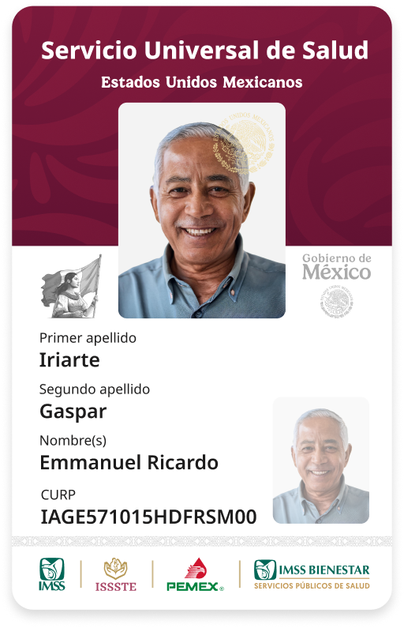

gob.mx
Buscador de trámites federales
y programas sociales
Si tu búsqueda de trámite o programa social es estatal o municipal, es posible que aún no se encuentre en el portal. Estamos trabajando para integrarlos próximamente.
Accesos y contenido destacado
Consulta
Trámites federales
Consulta
Programas sociales
Actividades y compromisos de la presidenta
presidenta.gob.mxRelevantes y próximos a vencer
No se encontraron registros.